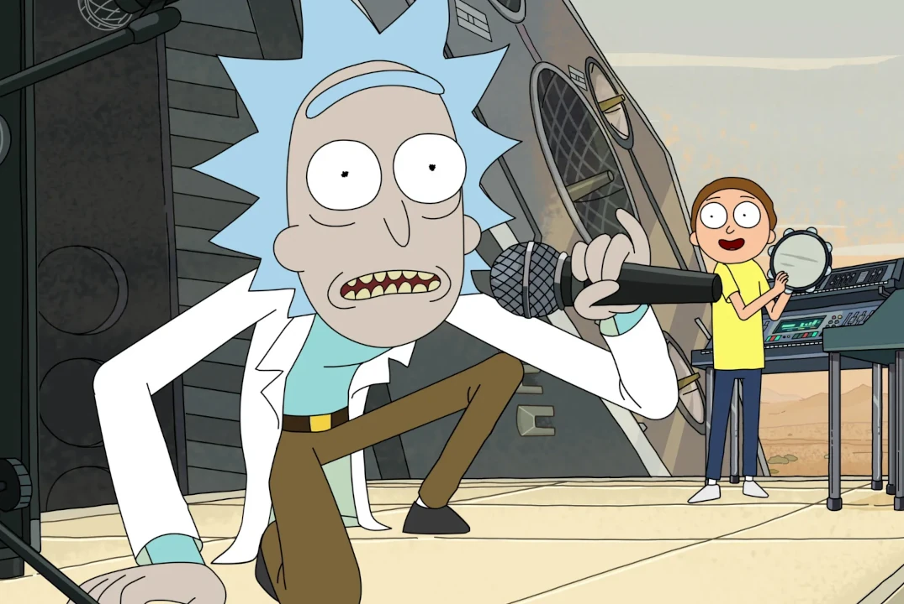
EXPLORAR TEMPORADAS
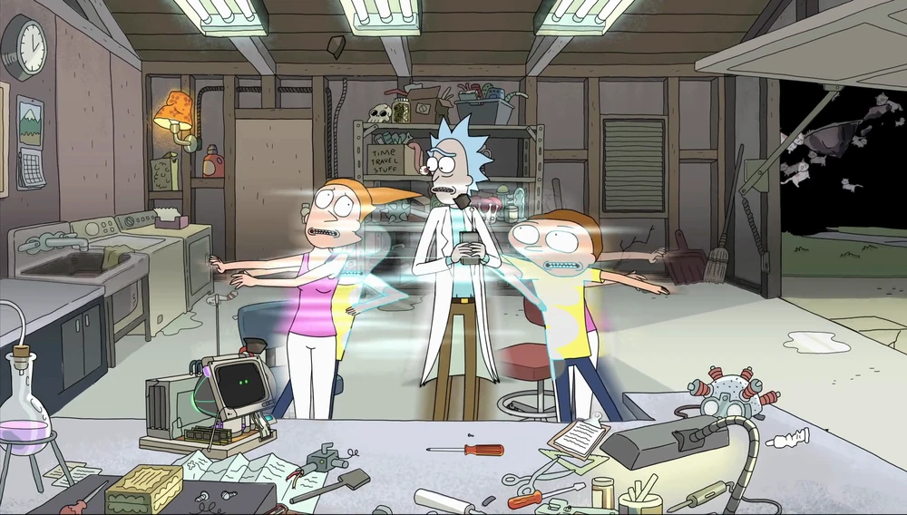
O tempo foi reiniciado. Rick, Morty e Summer estão em um estado de existência incerto quântico. Isso leva à criação de linhas de tempo alternativas.
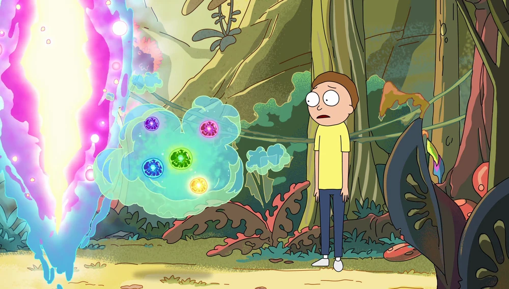
Rick e Morty tentam salvar uma forma de vida gasosa enquanto Jerry mora em uma creche.
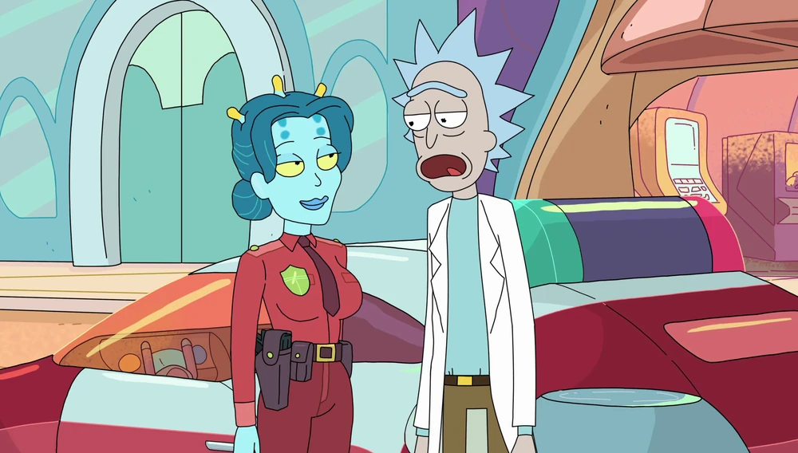
Rick fica emocionado. Beth e Jerry brigam.
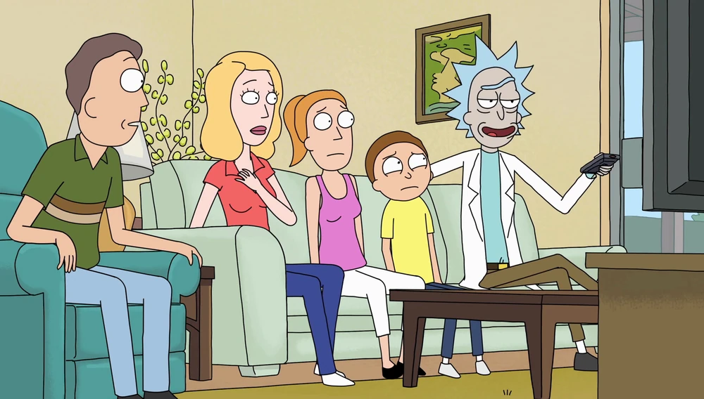
A casa dos Smith está fechada depois que parasitas ameaçaram dominar o mundo.
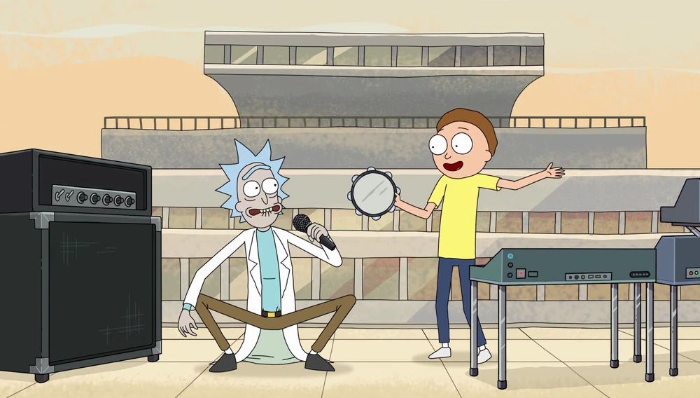
Rick e Morty tem que ajudar a Terra depois que uma cabeça gigante apareceu no planeta, demandando ver o programa de um sucesso musical.
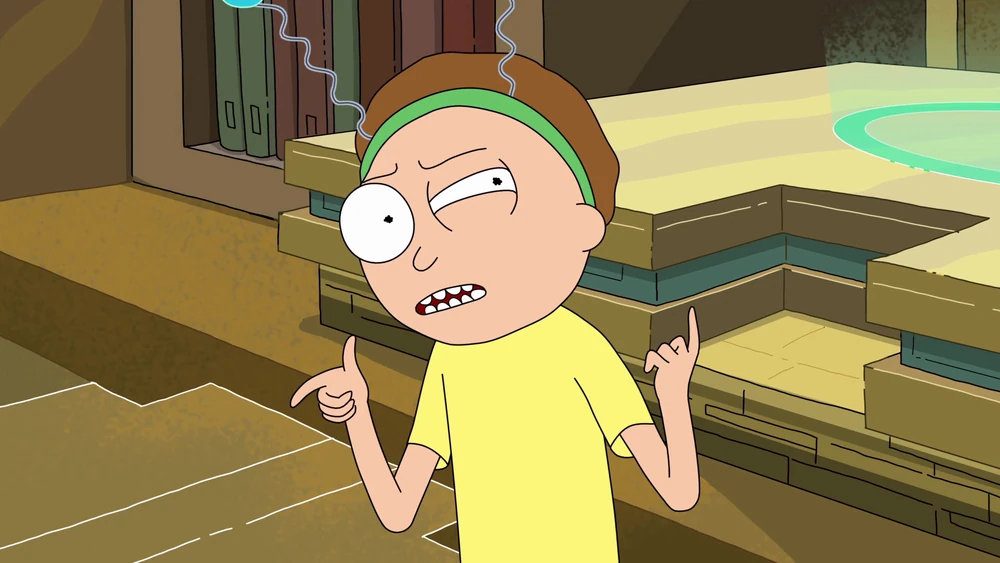
Rick tem problemas com o carro e, para consertá-lo, viaja ao microuniverso.
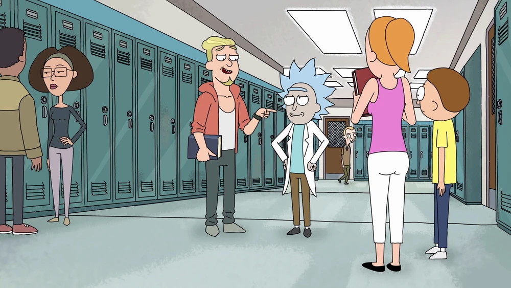
Rick faz algumas travessuras transferindo a consciência na puberdade de "Tiny Rick". Beth e Jerry estão trabalhando para consertar seu relacionamento.
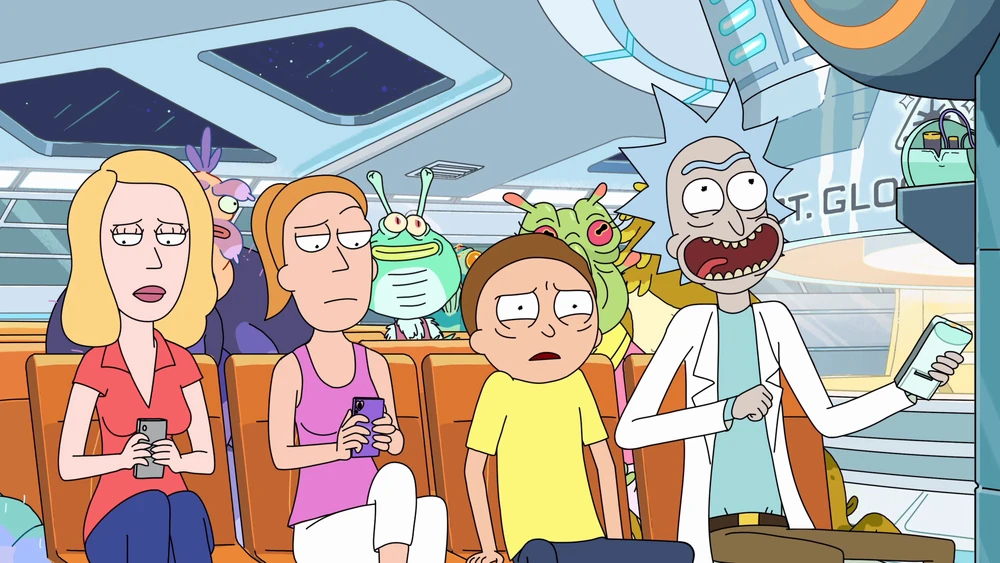
Jerry deve decidir se perde sua masculinidade para salvar um alienígena da morte. Rick, Morty e Summer veem a possibilidade da TV interdimensional.
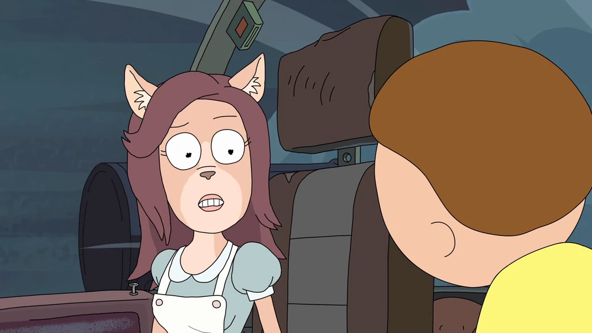
Rick e Morty chegam em outro planeta para consertar sua nave no dia de uma purga, Jerry e Summer analisam sua relação, seu desemprego volta à tona.
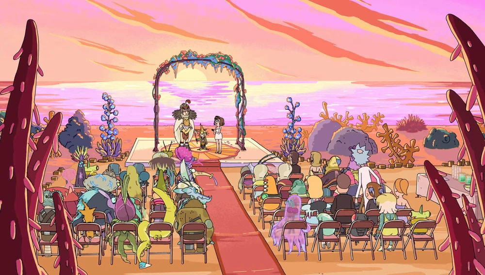
Rick e Morty são convidados para um casamento.